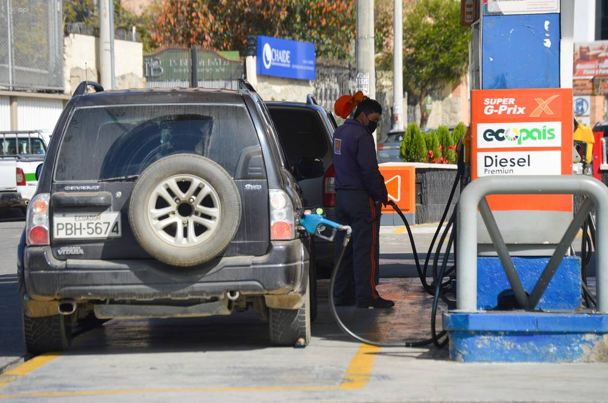

¡Hola!
Soy, Bruno Mateus
Bienvenido a mi pagina Web, te invito a conocer más sobre mi.
Bienvenido a mi pagina Web, te invito a conocer más sobre mi.
La gasolina súper en el Ecuador, cuyo precio está liberado y atado a precios internacionales, costará desde mañana 12 de julio $ 5,20 el galón. Así lo confirmó hace pocos minutos Oswaldo Erazo, director ejecutivo de la Cámara de Distribuidores de Derivados de Petróleo (Camdeppe). Erazo dijo que ha recibido la confirmación de las comercializadoras de Petroecuador y de Petróleos y Servicios de que $ 5,20 será el precio del combustible que es consumido por el 4 % de usuarios dentro del mercado de combustibles líquidos. Sin embargo, dijo que otras comercializadoras podrían venderla hasta en $ 5,30, pues existe la flexibilidad.
Fuentes: El Universo